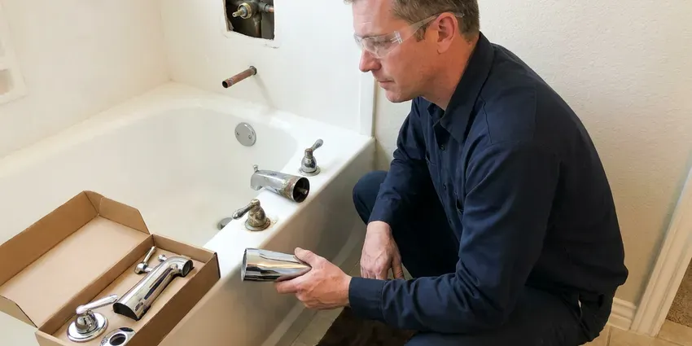

Toilet Installation in Douglas, WY
Old toilet cracked or past saving? JKV Plumbing can usually have a new one set the same day in Douglas, WY.
- Installs Around Your Remodel Schedule
- Same-Day Installs Available
- Built to Plumbing Code
- Old Toilet Removed and Hauled Off
Book a Toilet Install in Douglas, WY
Call JKV Plumbing for a flat price on your toilet install, fixture included or not.
Toilet Installs for Your Douglas, WY Bathroom
JKV Plumbing installs toilets in new construction, home additions, guest suites and full remodels across Douglas. We set the bowl only after tile and grout have cured. We confirm the rough-in matches the fixture, set the closet flange flush with or slightly above the finished floor, and run a new quarter-turn stop and braided supply line. Each bowl is shimmed level and flushed five or more times.
Work we handle every week:
- In-wall carrier and concealed tank systems
- Rough-in measuring for new floors and additions
- Bidet seat and smart toilet installation

Additional Bathroom Plumbing Services in Douglas, WY
From toilets to showers, our bathroom plumbing team in Douglas, WY handles repairs, installs, and upgrades with tidy, code-compliant work.


Customers
Why Choose JKV Plumbing for Toilet Installation in Douglas, WY?
Our plumbers check the flange before they even unbox your new toilet. If the ring is cracked or rusted, it gets replaced right then. Setting a new toilet on a bad flange is the most common install mistake we see, and it shows up months later as a stained ceiling below or a soft spot in the floor around the base. We would rather fix it the first day.
- Correct Rough-In, We measure 10, 12 or 14 inch rough-ins from the finished wall before the toilet is ordered.
- Full Testing, Five or more flushes and a dry paper towel at every joint before we go.
- Clean Work, Drop cloths down, old toilet bagged, and the bathroom wiped down before we leave.
Citywide Coverage
Distance across Douglas does not change how we set a toilet. Every flange gets inspected first. An apartment in the middle of town and a farmhouse outside it get the same stainless bolts and the same test flushes.
Experienced Team
We have installed everything from builder-grade toilets to one-piece TOTO and Kohler models with skirted trapways. Skirted bowls hide the bolts. They mount with a bracket or adapter system instead of standard closet bolts, which means more measuring and more patience than a basic two-piece ever needs.
Safety-First Approach
Bolts and flanges corrode in a wet spot like the base of a toilet. We use brass or stainless only. Plated bolts rust in a few years, and a rusted nut turns the next swap into a hacksaw job.
Trusted Certified Douglas Plumbing Services Professionals
At JKV Plumbing, we take pride in licensed, certified plumbing services throughout Douglas, WY. Credentials matter in this trade. Our plumbers hold recognized industry credentials, and they follow strict safety and quality rules on every repair, installation and maintenance call we run.
Call Us Now PHCC Plumbing Contractor Recognition
PHCC Plumbing Contractor Recognition Better Business Bureau (BBB) Accreditation
Better Business Bureau (BBB) Accreditation Angi Certified Pro
Angi Certified Pro ISO 9001 Quality Management Certification
ISO 9001 Quality Management CertificationToilet Installation Jobs We Handle in Douglas, WY
Wall-Hung Carrier Systems in Douglas
In-wall carriers from Geberit and Grohe each mount a little differently, and the instructions matter. We follow the maker's frame height chart exactly. Set the frame too low and the bowl ends up at child height, too high and nobody's feet touch the floor, and neither can be fixed once the wall is tiled. Measure twice here.

Bathroom Remodel Toilet Installation in Douglas, WY
New tile over old vinyl can raise a bathroom floor by half an inch or more. That leaves the old flange sitting low. Either an extender ring brings the flange up or a new flange goes in, and relocating a toilet on a slab means saw-cutting concrete to move the drain. Moving it on a wood floor is easier.
Commercial Restroom Toilets in Douglas, WY
Restaurants and offices get heavy-duty fixtures and accessible stalls built to code. A closed restroom costs a business money. Work gets scheduled before opening or after close, with fixtures staged on site, so each stall is out of service only briefly. We work with your GC on inspections.
Low-Flow WaterSense Toilet Installation in Douglas, WY
WaterSense toilets are capped at 1.28 gallons per flush, and some dual-flush models drop to around 0.8 for liquid waste. It adds up quickly. Replacing a single 3.5 gallon toilet in a household of four can save several thousand gallons a year, and some water utilities have offered rebates on high-efficiency models, so it is worth asking yours. Pick a strong MaP rating.
Toilet Flange and Wax Ring Replacement in Douglas, WY
The closet flange is the ring that ties the toilet to the drain, and it is the weak point on most old installs. Cast iron flanges rust through at the bolt slots. PVC and ABS flanges crack when someone overtightens the bolts, and a repair ring screwed over the top is often all it takes to restore a solid anchor. Seal goes on last.
Comfort-Height and ADA Toilets in Douglas
Aging in place usually starts in the bathroom. A grab bar and a taller bowl help a lot. If the drywall is already off, blocking gets added between studs so a grab bar can screw into wood, not hollow-wall anchors. We also center the bowl to ADA spacing.
Commercial Flushometer Toilets in Douglas
Sloan and Zurn flushometer valves are the standard on commercial toilets for a reason. There is no tank to refill. We install manual and sensor-operated valves on floor-mount and wall-hung bowls, and we set the supply stop so the valve delivers its full rated volume without splashing or running on. Sensor valves cut down on touch points.

Urgent Toilet Replacement in Douglas
A cracked tank or a bowl leaking at the base cannot wait for next week, especially in a house with one bathroom. Standard two-piece toilets ride on our trucks. Often the broken unit comes out and a 12 inch rough-in replacement goes in during the same trip, round or elongated. Close the stop until then.
Toilet Installation Near Me in Douglas, WY
Our plumbers live and work around Douglas, so they see the same house styles and drain materials week after week, and they know which ones give trouble. Housing in Wyoming includes older ranch homes, manufactured homes and newer builds, with plumbing ranging from galvanized pipe to PEX. That tells us what to expect under the floor before we lift the old toilet. We pull permits when a job needs one.
Local plumbers show up faster, and the ones who work in Douglas every week already know what kind of drains and floors are under most bathrooms. Our techs schedule installs in two-hour arrival windows. You get a text when the tech is on the way, plus a call if the previous job runs over. Most installs are done by lunch.
JKV Plumbing at a Glance
- Licensed and insured plumbers serving Douglas, WY
- Same-day appointments and 24/7 emergency response
- Clear written estimates, no hidden fees
- 4.9-star rated by 782+ Wyoming customers
Douglas Map
Douglas Information
- Population
- 6,449
- Area codes
- Local
- Service area
- Douglas and communities within 40 miles
- Nearby
- Casper, Torrington, Laramie, Gillette
Cold, windy winters, dry air and big temperature swings are the main climate stresses on plumbing across Wyoming. A new toilet in a Douglas, WY home should sit flat on the floor, with no daylight under the base and no give when you sit. Anything less leaks eventually.
Expert Services
Call JKV Plumbing for honest, reliable plumbing from people who know the trade in Douglas, WY.
Our Specialized Plumbing Services in Douglas, WY
At JKV Plumbing, we handle the full list of plumbing services across Douglas, WY. From leak detection to full system installs, our team works fast and charges fair prices on homes and commercial properties alike. Explore our core services below:


What to Expect From a Toilet Install in Douglas, WY
We run every toilet install in your Douglas, WY home the same way, start to finish, from the first measurement to the last flush.
Request a Quote
Tell us about the bathroom and the toilet on the phone at (307) 393-4049. Expect a question about the rough-in.
Old Toilet Removal
With towels down, we disconnect the supply, unbolt the bowl and stuff a rag in the open drain so sewer gas stays out.
New Toilet Setup
New seal, new bolts, a level bowl and a tank tightened evenly side to side. Then we fill it and check every joint for drips.
Frequently Asked Questions About Toilet Installation in Douglas
Labor for a standard toilet installation in Douglas typically falls between $250 and $600, not counting the toilet itself. Flange repairs add to that. Extra work such as a rotted flange or soft subfloor raises the price, and we quote it before we begin.
TOTO and American Standard do well in independent flush tests, and Kohler is close behind, with parts at most supply houses. For a budget, Gerber and Mansfield hold up. We match the model to your rough-in and how the bathroom gets used.
Just about any brand you can buy at a supply house or home center. We see a lot of TOTO and American Standard. Gerber and Mansfield are common in rentals because parts are cheap and easy to get, and we can usually tell you which one fits your budget and your rough-in after a short call. Bring us the model number.
Two warranties apply. The manufacturer covers the toilet. Parts usually get one to five years and the china often far longer, and our guarantee picks up any leak caused by the install.
Plan on one to three hours for a straight swap. Setting the bowl itself is the quick part. Add a new flange or a subfloor patch and it can run to half a day, which we will flag as soon as we see it.
Start with the rough-in, since that decides which models fit at all. Next comes bowl shape. Elongated bowls are more comfortable but stick out about two inches farther, which can be a problem in a small half bath with the door swinging in. Check the MaP flush score too.
Homeowners set basic toilets all the time. Flange height and bolt torque are where it goes wrong. A flange that sits below the finished floor needs an extender or a thicker seal, and a nut tightened one turn too far can crack the base, so on new floors and wall-hung toilets a pro install is the safer bet.
Lower water bills come first. Pre-1994 toilets can use nearly three times what a 1.28 gallon model does. Newer bowls also have wider glazed trapways that clog less, and the smoother porcelain stays cleaner between scrubbings than an old pitted bowl ever did.
What Our Customers Say About Our Plumbing Experts

Megan L.
Our upstairs tub drained so slowly that every shower turned into a bath. JKV Plumbing pulled a wad of hair out of the stopper and then snaked the line past the trap. Three months later it still drains fast.
Drain Cleaning · Gillette, WYRachel N.
Hard water was leaving white crust on every faucet and our dishwasher was struggling. The tech tested the water, recommended a softener sized for a family of five, and installed it with a bypass valve in one afternoon. The spots on our glasses are gone.
Water Softener · Torrington, WY
Tyler J.
We bought a taller comfort height toilet for my dad, who just had knee surgery. The plumber pulled the old one, found the flange was cracked, and replaced it before setting the new bowl. Took about two hours.
Toilet Installation · Douglas, WY
Jessica T.
We were adding a gas range in a kitchen remodel and needed a new line run from the meter. The plumber pulled the permit, ran the pipe through the crawl space, and had it inspected and approved within the week.
Gas Line Repair · Rawlins, WY
Kevin O.
Before buying our house I paid for a sewer camera inspection. JKV Plumbing found a belly in the line that held standing water about forty feet from the cleanout. We used the video to get the sellers to fix it before closing.
Sewer Camera Inspection · Rawlins, WY
Patricia H.
We had a slab leak that two other companies could not find. JKV Plumbing located it in under an hour with a listening device. They rerouted the line through the attic instead of breaking up the floor, so we kept our kitchen tile.
Slab Leak Repair · Casper, WY